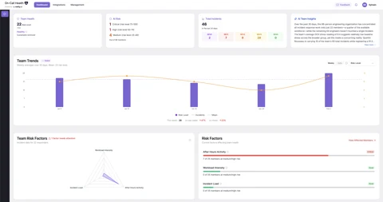

Partnered with AWS to finetune Qwen world models for incident simulation. I also built a Slack bot for SRE training and incident replays.

On-Call Health
Co-developed and launched oncallhealth.ai, an open-source burnout detection platform for on-call engineers. Used by engineering teams at wandb brex and more.
Medical Computer Vision and Robotics Lab, University of Toronto
Student Researcher
MARS: Segmentation-Guided Masked Representations for Visual Sim-to-Real Manipulation
Combining reinforcement learning with multimodal masked reconstruction of RGB and segmentation for robust spatial representations and sim2real manipulation.
First author · Under review
Latent Self-Distillation for Multi-Camera Masked Autoencoding with Vision Transformers
Combining multi-view masked autoencoding with latent self-distillation for downstream policy deployment under camera dropout.
First author
DynaPlan: Dynamic Hierarchy Discovery for Robotic Planning in Long-Horizon Puzzle Tasks
Improving long-horizon robotic planning through reusable action hierarchies and bidirectional verification to enhance the reliability and efficiency of language-model planning.
Second author · Under review
Extra.
I trained and deployed imitation learning policies on Franka robots and the da Vinci Research Kit (dVRK). Also built a sim2real pipeline from ManiSkill to Franka, and a digital twin for teleop. To test how well policies generalize, I designed domain-randomized envs in MuJoCo based sims (DeepMind Control and Meta World) and in ManiSkill. I ran ablation studies and fine-tuning experiments on Slurm clusters with Apptainer, tracking results in Weights & Biases. I also designed reward functions as part of a 3-stage training curriculum to train a humanoid robot to walk using RL. I've ran lots of evals on IL, RL, LLM, and VLA policies on various robotic tasks.
VISTA: A Multimodal Egocentric Benchmark for Goal-Oriented Perception and Assistance to Blind and Low-Vision Users
Developed a multimodal benchmark to evaluate VLMs on egocentric recordings and built a sensor-fusion model that combines RGB video with gaze, motion, spatial data, and other modalities.